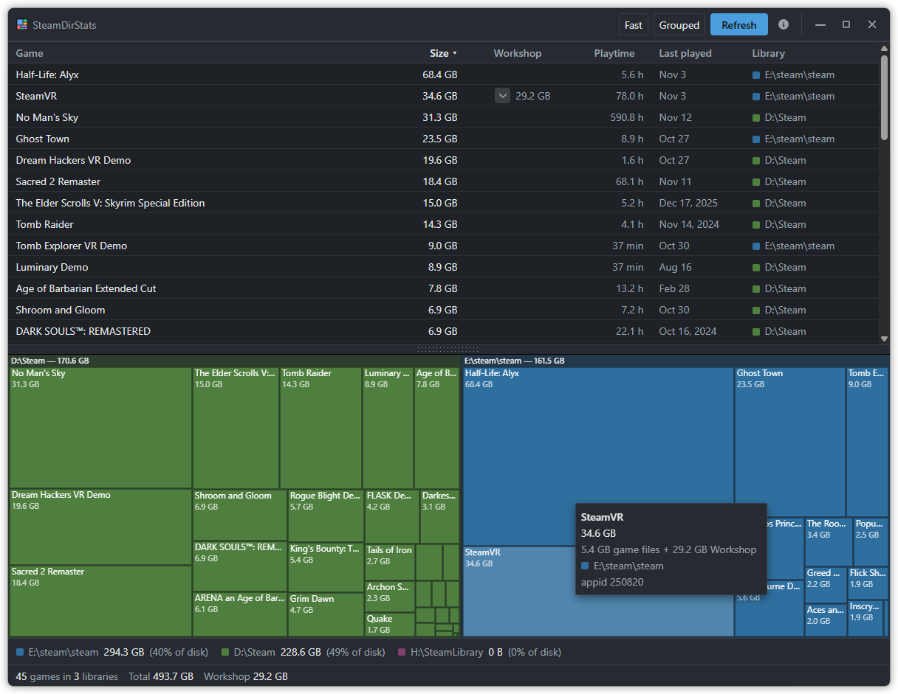

See which Steam games
are eating your disk space
See at a glance which games use the most space, across all your Steam libraries. View and manage Workshop items that quietly grow to gigabytes, and uninstall straight from the list.
Download v1.0.0 for Windows 10/11 (6MB)
Portable app, no installer. Browse all releases.

Features
- Status bar displays the total space taken by all games across all libraries combined.
- The list of games can be sorted by Size, Playtime, Last played, etc.
- View Workshop items for a game, by size descending; a “View on Steam Workshop” link takes you to the page in Steam where you can unsubscribe from the item.
- Treemap view to see at a glance which games take the most space, grouped by library or mixed together.
- Context menu to view the Store page, browse local files, or uninstall — which triggers Steam’s own Uninstall dialog, where you can confirm or cancel.
- The app does not modify or write anything to your Steam folders, it only parses data from the libraries.
- Per Steam account data such as Playtime and Last played comes from the last account that signed into Steam.
- Works offline. An internet connection is only needed to look up the full name of Workshop items. Those are cached locally so the lookup is done only when necessary.
-
Portable: settings are saved next to the executable, falling back to
%APPDATA%when that folder is read-only.